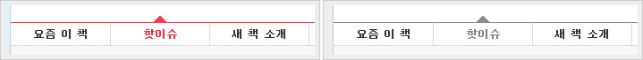

참고사항
- 이 문서는 웹페이지 및 어플리케이션 제작 시 참고해야 할 사항에 대해 기술합니다.
- 이 문서는 웹기술을 활용하여 서비스를 만드는 모든 이를 대상으로 합니다.
- 해당 내용은 웹접근성 콘텐츠 제작 시 적용해야 할 필수 요건입니다. 그 밖 콘텐츠 제작 시 적용시키지 않아도 무관합니다.
- 인식의 용이성은 사용자가 장애 유무 등에 관계없이 웹 사이트에서 제공하는 모든 콘텐츠를 동등하게 인식할 수 있도록 콘텐츠를 제공하는 것을 의미합니다.
대체 텍스트
별도의 라벨텍스트가 없는 입력폼의 경우 다음과 같이 title을 제공합니다.
- 이미지 등에 대한 대체 텍스트 제공
-
텍스트 아닌 콘텐츠는 그 의미나 용도를 이해할 수 있도록 대체 텍스트를 제공해야 합니다. 웹 페이지에 이미지를 포함시키기 위하여 img 태그를 사용하는 경우, alt 속성을 이용하여 짧은 대체 텍스트를 제공합니다.
- 인물 사진 (인물 이름)
<img src="sample_0301_01.jpg" alt="세종대왕"> - 도서 표지 (도서 제목)
<img src="sample_0301_02.jpg" alt="천일야화"> - 별평점 이미지 (몇점 만점에 몇점)
<img src="img_starating_a4.gif" alt="5점 만점에 4점">
- 인물 사진 (인물 이름)
- 버튼 이미지에 대한 대체 텍스트 제공
-
이미지를 이용한 입력 버튼의 경우 버튼에 alt 속성을 이용하여 대체 텍스트를 제공합니다.
<form action="/submit/test" method="post"> <input type="image" name="submit" src="btn_confirm_blue" alt="확인" /> </form>
- 이미지 맵에 대한 대체 텍스트 제공
-
area 태그별로 alt 속성을 이용하여 해당 영역의 용도나 목적을 대체 텍스트로 제공합니다.
<img src="language.gif" alt="language" usemap="#language"> <map name="language"> <area alt="ENGLISH" shape="rect" coords="10,5,66,19" href="/en/"> <area alt="KOREAN" shape="rect" coords="10,17,66,32" href="/ko/"> </map>
- 그래프 등에 대한 설명문 제공
-
그래프나 약도, 조직도과 같이 그 의미하는 바를 간단한 대체 텍스트로 충분한 설명이 불가능할 경우 추가적인 설명을 제공해야 합니다.
- 설명문 제공
<p><img src="chart.gif" alt="중앙기관 웹 접근성 조사결과"/></p> <p>2008년도 중앙기관의 웹 접근성 조사결과에 따르면 ... <p> - 이미지 링크 제공
<a href="chartdesc.html"><img src="chart.gif" alt="중앙기관 웹 접근성 조사결과"/></a> - longdesc 속성 제공
<img src="chart.gif" alt="중앙기관 웹 접근성 조사결과" longdesc="dest_chart.html" />
- 설명문 제공
- 대체 텍스트를 빈 공간(alt="")으로 제공해야 하는 경우
-
텍스트 설명이 함께 제공되는 이미지 또는 의미가 없는 글머리표 등과 같이 장식용으로 사용하는 이미지에는 대체 텍스트를 빈 공간으로 제공해야 합니다.
<p><img src="bull_round.gif" alt=""/> 화면 낭독 프로그램</p>
- IR(Image Replacement) 기법
-
복잡한 구조의 콘텐츠를 가지는 이미지의 경우 해당 이미지를 배경처리하여 보여주고 이미지와 동일한 내용의 html 콘텐츠을 삽입한 뒤 숨김처리하는 기법
#content1 {background:url('content.jpg') no-repeat;} .hidden {visibility:hidden;position:absolute;}<div id="content1"> <div class="hidden"> <h2>할인예보</h2> <p>2013년 8월 9일 (금)</p> <dl> <dt>할인예보 서비스란?</dt> <dd>출간 후 18개월이 경과하여 추가할인이 가능해진 도서 중 가장 사랑받았던 도서를 가장 빨리 할인된 가격으로 추천...</dd> </dl> </div> </div>IR 기법을 사용할 경우 이미지에 alt 값을 넣는 것에 비해 복잡한 구조의 콘텐츠를 제공할 수 있어 전맹자를 위한 스크린리더기에 대해 효과적으로 접근성을 확보할 수 있는 반면, 약시자를 위한 고대비모드(운영체제에서 지원) 환경에서는 배경이미지가 단색으로 처리되어 배경 이미지와 텍스트 양쪽 모두를 볼 수 없게 되는 취약점이 있습니다.
- CSS와 이미지를 모두 사용하는 환경 : 내용(이미지)을 볼 수 있습니다.
- CSS와 이미지를 모두 사용하지 않는 환경 (스크린리더) : 내용(텍스트)을 볼 수 있습니다.
- CSS는 사용하면서 이미지를 사용하지 않는 환경 : 내용을 볼 수 없습니다.
- CSS와 이미지는 사용하지만 배경이미지를 사용하지 않는 환경 (고대비모드) : 내용을 볼 수 없습니다.
- 이미지는 사용하면서 CSS를 사용하지 않는 환경 : 내용(텍스트)을 볼 수 있습니다.
※ 내용을 배경이미지로 보여주고 텍스트로 된 내용은 숨기는 방식인 Image Sprite 기법 역시 동일한 이슈가 있습니다.
멀티미디어 대체 수단
동영상, 음성 등 멀티미디어 콘텐츠를 이해할 수 있도록 대체 수단을 제공해야 합니다.
- 자막 제공
-
멀티미디어 콘텐츠에는 자막, 원고 또는 수화를 제공해야합니다. 자막을 오디오와 동기화시켜 제공하거나 원고 또는 수화를 제공해야 합니다. 대사 없이 영상만 제공하는 경우 화면해설을 제공합니다.
명료성
콘텐츠는 명확하게 전달되어야 합니다.
- 색에 무관한 콘텐츠 인식
-
콘텐츠는 색에 관계없이 인식될 수 있어야 합니다. 색을 이용하여 서식의 용도를 나타내는 경우와 같이 정보를 제공하는 수단으로 색을 사용합니다면 보완 방법을 함께 제공하여 색의 의미를 전달할 수 있어야 합니다.
- 색을 보완하는 텍스트 제공
- 색을 보완하기 위하여 글자모양(글꼴,밑줄,굵은글씨,이텔릭체,글자크기,명도대비)을 이용하는 방법
- 색을 보완하기 위하여 무늬 또는 모양을 이용하는 방법

※ 화면을 흑백 모니터나 흑백 프린터로 출력하더라도 전달하고자 하는 내용에 문제가 없는지 확인할 것.
- 명확한 지시사항 제공
-
지시사항은 모양, 크기, 위치, 방향, 색, 소리 등에 관계없이 인식될 수 있어야 합니다. 특정 요소를 가리키거나 지시사항을 전달할 때 시각이나 청각 등과 같은 특정 감각에만 의존하지 않고 다른 감각을 통해서도 지시사항을 인식하는 데 문제가 없도록 제공해야 합니다.
- 시각정보: 빨간색 버튼을 누르시오 → 빨간색 확인 버튼을 누르시오.
- 청각정보: 음성알림을 제공하는 경우 화면에 동일한 내용의 메세지 창을 함께 표시
- 텍스트 콘텐츠의 명도 대비
-
텍스트 콘텐츠와 배경 간의 명도 대비는 4.5대 1 이상 이어야 합니다. 웹 페이지에 보이는 핵심 텍스트 콘텐츠와 배경 간의 충분한 대비를 제공하여, 저시력자, 색각 이상자, 고령자 등도 콘텐츠를 인식할 수 있도록 제공해야 합니다. 이를 위하여 보통 크기(18pt 미만, 또는 굵은 14pt 미만)의 텍스트는 4.5:1을 만족해야 합니다. 그 이상의 텍스트(18pt 이상, 또는 굵은 14pt 이상)의 텍스트는 3:1을 만족해야 합니다.
본문 콘텐츠에 단순히 장식 목적으로만 사용한 텍스트, 로고 또는 상호와 같은 텍스트 이미지, 마우스나 키보드를 활용하여 초점을 받았을 때 색이나 명도 대비가 변화하는 콘텐츠, 사용할 수 없음을 표시하기 위하여 명도 대비를 낮춘 회색의 컨트롤이나 입력 서식 등은 이 검사 항목의 적용을 받지 않습니다.
14pt = 18px
18pt = 24px
- 배경음 사용금지
-
- 자동적으로 재생되는 배경음의 지속시간을 3초 미만이 되도록 제한함
- 3초 이상 재생되는 배경음을 사용할 경우, 반드시 배경음을 제어할 수 있는 수단(멈춤, 일시정지, 음량조절 등)을 웹 페이지의 첫 부분에 제공함
- 콘텐츠 간의 구분
-
웹 페이지를 구성하는 이웃한 콘텐츠는 시각적으로 구분되도록 제공해야 합니다. 터치스크린을 채용한 모바일 기기에서 터치 기능을 이용할 수 있도록 이웃한 콘텐츠는 충분한 간격을 두도록 구현되어야 합니다.
이웃한 콘텐츠를 시각적으로 구분짓는 방법- 테두리를 이용하여 구분함
- 콘텐츠 사이에 시각적인 구분선을 삽입하여 구분함
- 서로 다른 무늬를 이용하여 구분함
- 콘텐츠 배경색 간의 명도대비(채도)를 달리하여 구분함
- 줄 간격 및 글자 간격을 조절하여 구분함
- 기타 콘텐츠를 시각적으로 구분할 수 있는 방법 등
출처 : 웹 콘텐츠 제작기법 (웹접근성연구소)